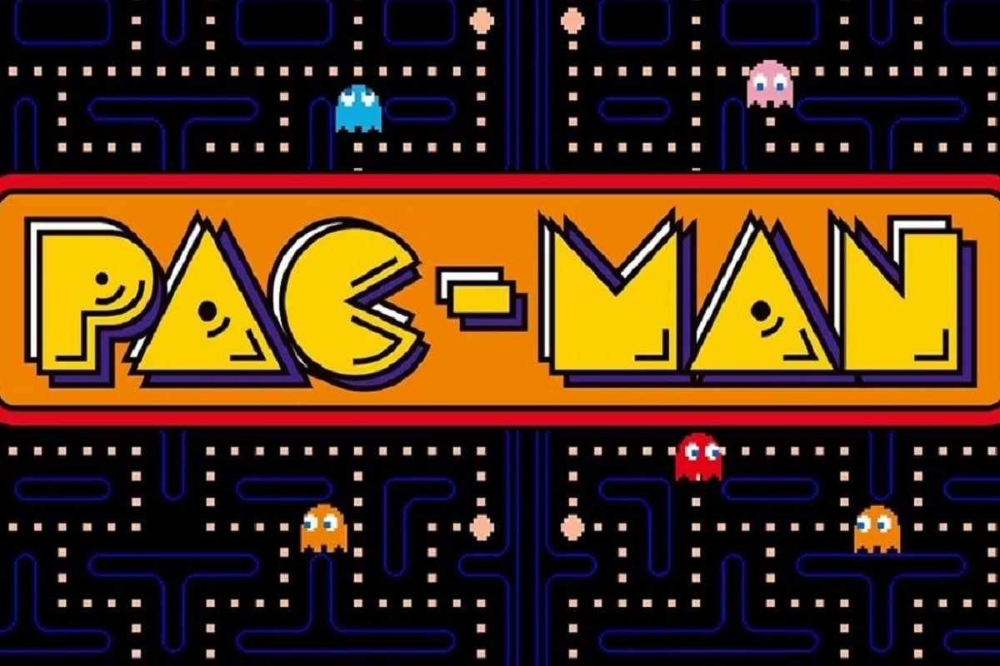
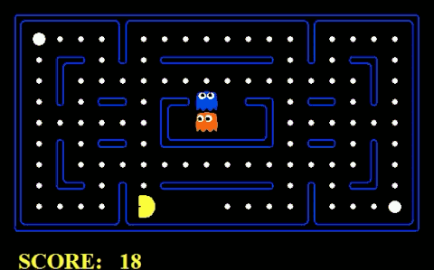

Pac-Man
Game Design Document
Concepte del Joc
Pac-Man és un joc arcade clàssic en què els jugadors controlen un personatge groc i rodó anomenat Pac-Man, que ha de menjar punts mentre evita els fantasmes en un laberint.
Objectiu del Joc
L'objectiu és menjar tots els punts del laberint sense ser atrapat pels fantasmes. Els jugadors poden guanyar punts addicionals recollint fruites i, en menjar superpoders, poden perseguir i menjar temporalment els fantasmes.
Descripció del Joc
Plataformes
Arcade, consoles, dispositius mòbils, PC
Objectiu Públic
Jugadors de totes les edats que gaudeixen de jocs simples i addictius.
Mecànica del Joc
Controls
Fletxes direccional (esquerra, dreta, amunt, avall) per moure Pac-Man.
Jugabilitat Principal
Pac-Man ha de menjar tots els punts del laberint sense ser atrapat pels fantasmes. En menjar superpoders, Pac-Man pot perseguir i menjar temporalment els fantasmes.
Progrés del Joc
La dificultat augmenta a mesura que els jugadors avancen a nivells superiors amb laberints més complexos i fantasmes més ràpids.
Història i Personatges
Trama del Joc
No hi ha una història profunda; el joc es centra en la mecànica addictiva de menjar punts i evitar fantasmes.
Personatges Principals
Pac-Man (protagonista), Fantasmes (Blinky, Pinky, Inky, Clyde - antagonistes).
-
Blinky (també conegut com Shadow):
Funció: Blinky és el perseguidor principal. La seva missió és seguir directament a Pac-Man. És el fantasma més ràpid i pot ser el més agressiu en la seva persecució.
-
Pinky (també conegut com Speedy):
Funció: Pinky esforça anticipar-se a la posició de Pac-Man. En lloc de perseguir directament, Pinky es mou cap a un lloc davant de Pac-Man, intentant tallar el seu camí.
-
Inky (també conegut com Bashful):
Funció: Inky és una mica més complex en el seu comportament. Es mou entre la persecució i l'evasió. La seva posició es determina a partir de la relació entre Blinky i Pac-Man. Inky pot ser més imprevisible en el seu moviment.
-
Clyde (també conegut com Pokey):
Funció: Clyde té un comportament més variat. A vegades persegueix a Pac-Man, però quan està massa a prop, pot entrar en mode d'evasió i allunyar-se. Clyde pot ser menys previsible que els altres fantasmes.
Art i Estil Visual
Personatges i Entorns
Pac-Man és un cercle groc, els fantasmes són colorits i tenen expressions distintives. Laberints amb punts, superpoders i fruites.
També he fet la representació amb llenguatje p5.js, ㅤclic aqui per veure-ho.

So i Música
Efectes de so / Música
Pac-Man no té música en si, està més compost per efecte de so, per exemple: quan perds, quan menges un superpoder, quan reinicies/inicies partida, i tot això està compost en una sola partida, com son tan repetitius, aconsegueixen hi hagi cap espai en silenci
Prova
Prova del Pac-Man
Hi han moltes formes, de provar el joc de Pac-Man gratuïtament, unes d'aquestes opciones és jugar gràcies a Google, en el següent enllaç ㅤclic aquíper jugar al Pac-Man de Google
Anàlisis DAFO
Fortaleses
-
Reconeixement de Marca:
Pac-Man és un joc icònic amb un reconeixement de marca global, facilitant l'atracció de jugadors de totes les edats.
-
Jugabilitat Simple i Addictiva:
La mecànica simple de menjar punts i evitar fantasmes fa que el joc sigui fàcil d'entendre i jugar, atreient tant a jugadors casuals com a fanàtics dels videojocs.
-
Adaptabilitat a Múltiples Plataformes:
Pac-Man ha estat exitós en diverses plataformes al llarg dels anys, des de màquines arcade fins a consoles i dispositius mòbils.
-
Possibilitat d'Actualitzacions i Noves Versions:
La simplicitat del concepte permet la creació de noves versions, actualitzacions i col·laboracions temàtiques, mantenint el "toc" del joc.
Oportunitats
-
Mercat Retro:
Hi ha un mercat creixent de jugadors nostàlgics que busquen experiències de joc retro, el que podria beneficiar a Pac-Man.
-
Col·laboracions i Merchandising:
Col·laboracions amb altres marques i la creació de productes de merchandising poden generar ingressos addicionals i mantenir l'interès en Pac-Man.
-
Innovació en Plataformes Emergents:
Explorar noves plataformes emergents, com la realitat virtual o augmentada, podria proporcionar oportunitats emocionants per reinventar l'experiència de joc de Pac-Man.
Dèbilses
-
Gràfics i Tecnologia Antigues:
Tot i que l'estil retro és part de l'encant de Pac-Man, la tecnologia antiga podria limitar el seu atractiu per als jugadors més joves acostumats a gràfics més avançats.
-
Competència en el Mercat de Jocs Mòbils:
En el mercat saturat de jocs mòbils, Pac-Man pot enfrontar-se a la competència de jocs més nous i visualment atractius.
Amenaces
-
Desgast de la Marca:
L'excés d'adaptacions i versions podria portar al desgast de la marca Pac-Man si no es gestionen adequadament.
-
Canvis en les Preferències del Jugador:
Les preferències dels jugadors poden canviar amb el temps, i el joc podria perdre rellevància si no s'actualitza per satisfer les expectatives actuals.
-
Pirateria i Imitacions:
La popularitat de Pac-Man podria donar lloc a la pirateria i la creació d'imitacions, la qual cosa podria afectar la reputació i els ingressos del joc original.